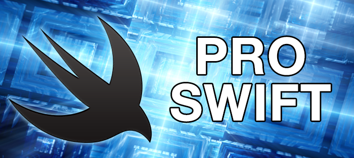

Wendy Lu (@wendyluwho), iOS engineer at Pinterest
Use final on properties and methods when you know that a declaration does not need to be overridden. This allows the compiler to replace these dynamically dispatched calls with direct calls. You can even mark an entire class as final by attaching the attribute to the class itself.
Switch/case is not a new concept: insert a value, then take one of several courses of action. Swift's focus on safety adds to the mix a requirement that all possible cases be catered for – something you don't get in C without specific warnings enabled – but that's fairly trivial.
What makes Swift's switch syntax interesting is its flexible, expressive pattern matching. What makes it doubly interesting is that since Swift's launch most of this pattern matching has been extended elsewhere, so that same flexible, expressive syntax is now available in if conditions and for loops.
Admittedly, if you jump in at the deep end you're more likely to sink rather than swim, so I want to work up from basic examples. To refresh your memory, here's a basic switch statement:
let name = "twostraws"
switch name {
case "bilbo":
print("Hello, Bilbo Baggins!")
case "twostraws":
print("Hello, Paul Hudson!")
default:
print("Authentication failed")
}
It's easy enough when you're working with a simple string, but things get more complicated when working with two or more values. For example, if we wanted to validate a name as well as a password, we would evaluate them as a tuple:
let name = "twostraws"
let password = "fr0st1es"
switch (name, password) {
case ("bilbo", "bagg1n5"):
print("Hello, Bilbo Baggins!")
case ("twostraws", "fr0st1es"):
print("Hello, Paul Hudson!")
default:
print("Who are you?")
}
You can combine the two values into a single tuple if you prefer, like this:
let authentication = (name: "twostraws", password: "fr0st1es")
switch authentication {
case ("bilbo", "bagg1n5"):
print("Hello, Bilbo Baggins!")
case ("twostraws", "fr0st1es"):
print("Hello, Paul Hudson!")
default:
print("Who are you?")
}
In this instance, both parts of the tuple must match the case in order for it to be executed.
When working with tuples, there are some occasions when you want a partial match: you care what some values are but don't care about others. In this situation, use underscores to represent "any value is fine", like this:
let authentication = (name: "twostraws", password: "fr0st1es", ipAddress: "127.0.0.1")
switch authentication {
case ("bilbo", "bagg1n5", _):
print("Hello, Bilbo Baggins!")
case ("twostraws", "fr0st1es", _):
print("Hello, Paul Hudson!")
default:
print("Who are you?")
}
Finally, if you want to match only part of a tuple, but still want to know what the other part was, you should use let syntax.
let authentication = (name: "twostraws", password: "fr0st1es")
switch authentication {
case ("bilbo", _):
print("Hello, Bilbo Baggins!")
case ("twostraws", let password):
print("Hello, Paul Hudson: your password was \(password)!")
default:
print("Who are you?")
}
That outlines the basic range of pattern-matching syntax that most developers use. From here on I want to give examples of other useful pattern-matching techniques that are less well known.
Tuples are most frequently created using static values, like this:
let name = ("Paul", "Hudson")
But tuples are like any other data structure in that they can be created using dynamic code. This is particularly useful when you want to narrow the range of values in a tuple down to a smaller subset so that you need only a handful of case statements.
To give you a practical example, consider the "fizzbuzz" test: write a function that accepts any number, and returns "Fizz" if the number is evenly divisible by 3, "Buzz" if it's evenly divisible by 5, "FizzBuzz" if its evenly divisible by 3 and 5, or the original input number in other cases.
We can calculate a tuple to solve this problem, then pass that tuple into a switch block to create the correct output. Here's the code:
func fizzbuzz(number number: Int) -> String {
switch (number % 3 == 0, number % 5 == 0) {
case (true, false):
return "Fizz"
case (false, true):
return "Buzz"
case (true, true):
return "FizzBuzz"
case (false, false):
return String(number)
}
}
print(fizzbuzz(number: 15))
This approach breaks down a large input space – any number – into simple combinations of true and false, and we then use tuple pattern matching in the case statements to select the correct output.
As you've seen, pattern matching using part of a tuple is easy enough: you either tell Swift what should be matched, use let to bind a value to a local constant, or use _ to signal that you don't care what a value is.
We can use this same approach when working with loops, which allows us to loop over items only if they match the criteria we specify. Let's start with a basic example again:
let twostraws = (name: "twostraws", password: "fr0st1es")
let bilbo = (name: "bilbo", password: "bagg1n5")
let taylor = (name: "taylor", password: "fr0st1es")
let users = [twostraws, bilbo, taylor]
for user in users {
print(user.name)
}
That creates an array of tuples, then loops over each one and prints its name value.
Just like the switch blocks we looked at earlier, we can use case with a tuple to match specific values inside the tuples. Add this code below the previous loop:
for case ("twostraws", "fr0st1es") in users {
print("User twostraws has the password fr0st1es")
}
We also have identical syntax for binding local constants to the values of each tuple, like this:
for case (let name, let password) in users {
print("User \(name) has the password \(password)")
}
Usually, though, it's preferable to re-arrange the let to this:
for case let (name, password) in users {
print("User \(name) has the password \(password)")
}
The magic comes when you combine these two approaches, and again is syntactically identical to a switch example we already saw:
for case let (name, "fr0st1es") in users {
print("User \(name) has the password \"fr0st1es\"")
}
That filters the users array so that only items with the password "fr0st1es" will be used in the loop, then creates a name constant inside the loop for you to work with.
Don't worry if you're staring at for case let and seeing three completely different keywords mashed together: it's not obvious what it does until someone explains it to you, and it will take a little time to sink in. But we're only getting started…
Swift has two ways of matching optionals, and you're likely to meet both. First up is using .Some and .None to match "has a value" and "has no value", and in the code below this is used to check for values and bind them to local constants:
let name: String? = "twostraws"
let password: String? = "fr0st1es"
switch (name, password) {
case let (.Some(name), .Some(password)):
print("Hello, \(name)")
case let (.Some(name), .None):
print("Please enter a password.")
default:
print("Who are you?")
}
That code is made more confusing because name and password are used for the input constants as well as the locally bound constants. They are different things, though, which is why print("Hello, \(name)") won't print Hello, Optional("twostraws") – the name being used is the locally bound unwrapped optional.
If it's easier to read, here's the same code with different names used for the matched constants:
switch (name, password) {
case let (.Some(matchedName), .Some(matchedPassword)):
print("Hello, \(matchedName)")
case let (.Some(matchedName), .None):
print("Please enter a password.")
default:
print("Who are you?")
}
The second way Swift matches optionals is using much simpler syntax, although if you have a fear of optionals this might only make it worse:
switch (name, password) {
case let (name?, password?):
print("Hello, \(name)")
case let (username?, nil):
print("Please enter a password.")
default:
print("Who are you?")
}
This time the question marks work in a similar way as optional chaining: continue only if a value was found.
Both of these methods work equally well in for case let code. The code below uses them both to filter out nil values in a loop:
import Foundation
let data: [AnyObject?] = ["Bill", nil, 69, "Ted"]
for case let .Some(datum) in data {
print(datum)
}
for case let datum? in data {
print(datum)
}
You're probably already using pattern matching with ranges, usually with code something like this:
let age = 36
switch age {
case 0 ..< 18:
print("You have the energy and time, but not the money")
case 18 ..< 70:
print("You have the energy and money, but not the time")
default:
print("You have the time and money, but not the energy")
}
A very similar syntax is also available for regular conditional statements – we could rewrite that code like this:
if case 0 ..< 18 = age {
print("You have the energy and time, but not the money")
} else if case 18 ..< 70 = age {
print("You have the energy and money, but not the time")
} else {
print("You have the time and money, but not the energy")
}
That produces identical results to the switch block while using similar syntax, but I'm not a big fan of this approach. The reason for my dislike is simple readability: I don't think "if case 0 up to 18 equals age" makes sense if you don't already know what it means. A much nicer approach is to use the pattern match operator, ~=, which would look like this:
if 0 ..< 18 ~= age {
print("You have the energy and time, but not the money")
} else if 18 ..< 70 ~= age {
print("You have the energy and money, but not the time")
} else {
print("You have the time and money, but not the energy")
}
Now the condition reads "if the range 0 up to 18 matches age", which I think makes a lot more sense.
An even cleaner solution becomes clear when you remember that 0 ..< 18 creates an instance of a Range struct, which has its own set of methods. Right now, its contains() method is particularly useful: it's longer to type than ~= but it's significantly easier to understand:
if (0 ..< 18).contains(age) {
print("You have the energy and time, but not the money")
} else if (18 ..< 70).contains(age) {
print("You have the energy and money, but not the time")
} else {
print("You have the time and money, but not the energy")
}
You can combine this range matching into our existing tuple matching code, like this:
let user = (name: "twostraws", password: "fr0st1es", age: 36)
switch user {
case let (name, _, 0 ..< 18):
print("\(name) has the energy and time, but no money")
case let (name, _, 18 ..< 70):
print("\(name) has the money and energy, but no time")
case let (name, _, _):
print("\(name) has the time and money, but no energy")
}
That last case binds the user's name to a local constant called name irrespective of the two other values in the tuple. This is a catch all, but because Swift looks for the first matching case this won't conflict with the other two in the switch block.
In my experience, quite a few people don't really understand enums and associated values, and so they struggle to make use of them with pattern matching. There's a whole chapter on enums later in the book, so if you're not already comfortable with enums and associated values you might want to pause here and read that chapter first.
Basic enum matching looks like this:
enum WeatherType {
case Cloudy
case Sunny
case Windy
}
let today = WeatherType.Cloudy
switch today {
case .Cloudy:
print("It's cloudy")
case .Windy:
print("It's windy")
default:
print("It's sunny")
}
You'll also have used enums in basic conditional statements, like this:
if today == .Cloudy {
print("It's cloudy")
}
As soon as you add associated values, things get more complicated because you can use them, filter on them, or ignore them depending on your goal.
First up, the easiest option: creating an associated value but ignoring it:
enum WeatherType {
case Cloudy(coverage: Int)
case Sunny
case Windy
}
let today = WeatherType.Cloudy(coverage: 100)
switch today {
case .Cloudy:
print("It's cloudy")
case .Windy:
print("It's windy")
default:
print("It's sunny")
}
Using this approach, the actual switch code is unchanged.
Second: creating an associated value and using it. This uses the same local constant bind we've seen several times now:
enum WeatherType {
case Cloudy(coverage: Int)
case Sunny
case Windy
}
let today = WeatherType.Cloudy(coverage: 100)
switch today {
case .Cloudy(let coverage):
print("It's cloudy with \(coverage)% coverage")
case .Windy:
print("It's windy")
default:
print("It's sunny")
}
Lastly: creating an associated type, binding a local constant to it, but also using that binding to filter for specific values. This uses the where keyword to create a requirements clause that clarifies what you're looking for. In our case, the code below prints two different messages depending on the associated value that is used with Cloudy:
enum WeatherType {
case Cloudy(coverage: Int)
case Sunny
case Windy
}
let today = WeatherType.Cloudy(coverage: 100)
switch today {
case .Cloudy(let coverage) where coverage < 100:
print("It's cloudy with \(coverage)% coverage")
case .Cloudy(let coverage) where coverage == 100:
print("You must live in the UK")
case .Windy:
print("It's windy")
default:
print("It's sunny")
}
Now, as promised I'm building up from basic examples, but if you're ready I want to show you how to combine two of these techniques together: associated values and range matching. The code below now prints three different messages: one when coverage is 0, one when it's 100, and another using a range from 1 to 99:
enum WeatherType {
case Cloudy(coverage: Int)
case Sunny
case Windy
}
let today = WeatherType.Cloudy(coverage: 100)
switch today {
case .Cloudy(let coverage) where coverage == 0:
print("You must live in Death Valley")
case .Cloudy(let coverage) where (1...99).contains(coverage):
print("It's cloudy with \(coverage)% coverage")
case .Cloudy(let coverage) where coverage == 100:
print("You must live in the UK")
case .Windy:
print("It's windy")
default:
print("It's sunny")
}
If you want to match associated values in a loop, adding a where clause is the wrong approach. In fact, this kind of code won't even compile:
let forecast: [WeatherType] = [.Cloudy(coverage: 40), .Sunny, .Windy, .Cloudy(coverage: 100), .Sunny]
for day in forecast where day == .Cloudy {
print(day)
}
That code would be fine without associated values, but because the associated value has meaning the where clause isn't up to the job – it has no way to say "and bind the associated value to a local constant." Instead, you're back to case let syntax, like this:
let forecast: [WeatherType] = [.Cloudy(coverage: 40), .Sunny, .Windy, .Cloudy(coverage: 100), .Sunny]
for case let .Cloudy(coverage) in forecast {
print("It's cloudy with \(coverage)% coverage")
}
If you know the associated value and want to use it as a filter, the syntax is almost the same:
let forecast: [WeatherType] = [.Cloudy(coverage: 40), .Sunny, .Windy, .Cloudy(coverage: 100), .Sunny]
for case .Cloudy(40) in forecast {
print("It's cloudy with 40% coverage")
}
You should already know the is keyword for matching, but you might not know that it can be used as pattern matching in loops and switch blocks. I think the syntax is quite pleasing, so I want to demonstrate it just briefly:
let view: AnyObject = UIButton()
switch view {
case is UIButton:
print("Found a button")
case is UILabel:
print("Found a label")
case is UISwitch:
print("Found a switch")
case is UIView:
print("Found a view")
default:
print("Found something else")
}
I've used UIKit as an example because you should already know that UIButton inherits from UIView, and I need to give you a big warning…
Important: Swift will take the first matching case it finds, and is returns true if an object is a specific type or one of its parent classes. So, the above code will print "Found a button", whereas the below code will print "Found a view":
let view: AnyObject = UIButton()
switch view {
case is UIView:
print("Found a view")
case is UIButton:
print("Found a button")
case is UILabel:
print("Found a label")
case is UISwitch:
print("Found a switch")
default:
print("Found something else")
}
To give you a more useful example, you can use this approach to loop over all subviews in an array and filter for buttons:
for label in view.subviews where label is UILabel {
print("Found a label with frame \(label.frame)")
}
Even though where ensures only UIButton objects are processed in the loop, it doesn't actually do any typecasting. This means if you wanted to access a label-specific property of label, such as its text property, you need to typecast it yourself. In this situation, using for case let instead is easier, as this filters and typecasts in one:
for case let label as UILabel in view.subviews {
print("Found a label with text \(label.text)")
}
To wrap up pattern matching, I want to demonstrate a couple of interesting ways to use where clauses so that you can get an idea of what it's capable of.
First, an easy one: loop over an array of numbers and print only the odd ones. This is trivial using where and modulus, but it demonstrates that your where clause can contain calculations:
for number in numbers where number % 2 == 1 {
print(number)
}
You can also calls methods, like this:
let celebrities = ["Michael Jackson", "Taylor Swift", "Michael Caine", "Adele Adkins", "Michael Jordan"]
for name in celebrities where !name.hasPrefix("Michael") {
print(name)
}
That will print "Taylor Swift" and "Adele Adkins". If you want to make your where clause more complicated, just add operators such as &&:
let celebrities = ["Michael Jackson", "Taylor Swift", "Michael Caine", "Adele Adkins", "Michael Jordan"]
for name in celebrities where name.hasPrefix("Michael") && name.characters.count == 13 {
print(name)
}
That will print "Michael Caine".
While it's possible to use where to strip out optionals, I wouldn't recommend it. Consider the example below:
let celebrities: [String?] = ["Michael Jackson", nil, "Michael Caine", nil, "Michael Jordan"]
for name in celebrities where name != nil {
print(name)
}
That certainly works, but it does nothing about the optionality of the strings in the loop so it prints out this:
Optional("Michael Jackson")
Optional("Michael Caine")
Optional("Michael Jordan")
Instead, use for case let to handle optionality, and use where to focus on filtering values. Here's the preferred way of writing that loop:
for case let name? in celebrities {
print(name)
}
When that runs, name will only contain the strings that had values, so its output will be:
Michael Jackson Michael Caine Michael Jordan
Swift optionals are one of the fundamental ways it guarantees program safety: a variable can only be used if it definitely has a value. The problem is that optionals make your code a bit harder to read and write, because you need to unwrap them safely.
One alternative is to explicitly unwrap optionals using !. This is also known as the "crash operator" because if you use ! with an optional that is nil, your program will die immediately and your users will be baying for blood.
A smarter alternative is the nil coalescing operator, ??, which allows you to access an optional and provide a default value if the optional is nil.
Consider this optional:
let name: String? = "Taylor"
That's a constant called name that contains either a string or nil. If you try to print that using print(name) you'll see Optional("Taylor") rather than just "Taylor", which isn't really what you want.
Using nil coalescing allows us to use an optional's value or provide a default value if it's nil. So, you could write this:
let name: String? = "Taylor" let unwrappedName = name ?? "Anonymous" print(unwrappedName)
That will print "Taylor": name was a String?, but unwrappedName is guaranteed to be a regular String – not optional – because of the nil coalescing operator. To see the default value in action, try this instead:
let name: String? = nil let unwrappedName = name ?? "Anonymous" print(unwrappedName)
That will now print "Anonymous", because the default value is used instead.
Of course, you don't need a separate constant when using nil coalescing – you can write it inline, like this:
let name: String? = "Taylor" print(name ?? "Anonymous")
As you can imagine, nil coalescing is great for ensuring sensible values are in place before you use them, but it's particularly useful in removing some optionality from your code. For example:
func returnsOptionalName() -> String? {
return nil
}
let name = returnsOptionalName() ?? "Anonymous"
print(name)
Using this approach, name is a String rather than a String? because it's guaranteed to have a value.
So far, so straightforward. However, nil coalescing gets more interesting when you combine it with the try? keyword.
Consider a simple app that lets a user type and save text. When the app runs, it wants to load whatever the user typed previously, so it probably uses code like this:
do {
let savedText = try String(contentsOfFile: "saved.txt")
print(savedText)
} catch {
print("Failed to load saved text.")
}
If the file exists, it will be loaded into the savedText constant. If not, the contentsOfFile initializer will throw an exception, and "Failed to load saved text will be printed". In practice, you'd want to extend this so that savedText always has a value, so you end up with something like this:
let savedText: String
do {
savedText = try String(contentsOfFile: "saved.txt")
} catch {
print("Failed to load saved text.")
savedText = "Hello, world!"
}
print(savedText)
That's a lot of code and it doesn't really accomplish very much. Fortunately, there's a better way: nil coalescing. Remember, try has three variants: try attempts some code and might throw an exception, try! attempts some code and crashes your app if it fails, and try? attempts some code and returns nil if the call failed.
That last one is where nil coalescing steps up to the plate, because this exactly matches our previous examples: we want to work with an optional value, and provide a sensible default if the optional is nil. In fact, using nil coalescing we can rewrite all that into just two lines of code:
let savedText = (try? String(contentsOfFile: "saved.txt")) ?? "Hello, world!" print(savedText)
That means "try loading the file, but if loading fails use this default text instead" – a neater solution and much more readable.
Combining try? with nil coalescing is perfect for situations when a failed try isn't an error, and I think you'll find this pattern useful in your own code.
The guard keyword has been with us since Swift 2.0, but because it does four things in one you'd be forgiven for not using it fully.
The first use is the most obvious: guard is used for early returns, which means you exit a function if some preconditions are not satisfied. For example, we could write a rather biased function to give an award to a named person:
func giveAwardTo(name: String) {
guard name == "Taylor Swift" else {
print("No way!")
return
}
print("Congratulations, \(name)!")
}
giveAwardTo("Taylor Swift")
Using that guard statement in the giveAwardTo() method ensures that only Taylor Swift wins awards. It's biased like I said, but the precondition is clear and this code will only run when requirements I have put in place are satisfied.
This initial example looks almost identical to using if, but guard has one massive advantage: it makes your intention clear, not only to people but also to the compiler. This is an early return, meaning that you want to exit the method if your preconditions aren't satisfied. Using guard makes that clear: this condition isn't part of the functionality of the method, it's just there to ensure the actual code is safe to run. It's also clear to the compiler, meaning that if you remove the return statement your code will no longer build – Swift knows this is an early return, so it will not let you forget to exit.
The second use of guard is a happy side effect of the first: using guard and early returns allows you to reduce your indent level. Some developers believe very strongly that early returns must never be used, and instead each function should return from only one place. This forces extra indents in the main body of your function code, something like this:
func giveAwardTo(name: String) -> String {
let message: String
if name == "Taylor Swift" {
message = "Congratulations, \(name)!"
} else {
message = "No way!"
}
return message
}
giveAwardTo("Taylor Swift")
With guard, you get your preconditions resolved immediately, and lose the extra indent – hurray for neat code!
The third thing that guard brings us is a visibility increase for the happy path. This is a common concept in software design and testing, and refers to the path that your code will take when no exceptions or errors happen. Thanks to guard, common errors are removed immediately, and the remainder of your code might all be the happy path.
That's all the easy stuff out of the way, but guard still has one more feature I want to discuss, and it's an important differentiator between guard and if: when you use guard to check and unwrap an optional, that optional stays in scope.
To demonstrate this, I'm going to rewrite the giveAwardTo() method so that it takes an optional string:
func giveAwardTo(name: String?) {
guard let winner = name else {
print("No one won the award")
return
}
print("Congratulations, \(winner)!")
}
With a regular if-let, the winner constant would only be usable inside the braces that belong to guard. However, guard keeps its optional unwraps in scope, so winner stays around for the second print() statement. This code reads "try to unwrap name into winner so I can use it, but if you can't then print a message and exit."
There's one last feature of guard I want to touch on, but it's not new. Instead, it's just a different way of using what you already know. The feature is this: guard lets you exit any scope if preconditions fail, not just functions and methods. This means you can exit a switch block or a loop by using guard, and it carries the same meaning: the contents of this scope should only be executed if these preconditions are true.
To give you a simple example, this loop counts from 1 to 100, printing out all the numbers that are evenly divisible by 8:
for i in 1...100 {
guard i % 8 == 0 else { continue }
print(i)
}
Can you rewrite that using where? Give it a try – it's easier than you think!
Lazy loading is one of the most important, system-wide performance optimizations that Swift coders work with. It's endemic in iOS, as anyone who has tried to manipulate a view controller's view before it's shown can tell you. Objective-C didn't have a concept of lazy properties, so you had to write your own boilerplate code each time you wanted this behavior. Happily, Swift has it baked right in, so you can claim immediate performance benefits with hardly any code.
But first: a reminder of what lazy properties are. Consider this class:
class Singer {
let name: String
init(name: String) {
self.name = name
}
func reversedName() -> String {
return "\(name.uppercaseString) backwards is \(String(name.uppercaseString.characters.reverse()))!"
}
}
let taylor = Singer(name: "Taylor Swift")
print(taylor.reversedName())
That will print "TAYLOR SWIFT backwards is TFIWS ROLYAT!" when run.
So each Singer has a single property called name, and a single method that does a small amount of processing to that property. Obviously in your own code these functions are likely to do more significant work, but I'm trying to keep it simple here.
Every time you want to print the message "TAYLOR SWIFT backwards is TFIWS ROLYAT!" you need to call the reversedName() method – the work it does isn't stored, and if that work is non-trivial then calling the method repeatedly is wasteful.
An alternative is to create an additional property to stored reversedName so that it's calculated only once, like this:
class Singer {
let name: String
let reversedName: String
init(name: String) {
self.name = name
reversedName = "\(name.uppercaseString) backwards is \(String(name.uppercaseString.characters.reverse()))!"
}
}
let taylor = Singer(name: "Taylor Swift")
print(taylor.reversedName)
That's a performance improvement for situations when you use reversedName a lot, but now causes your code to run slower if you never use reversedName – it gets calculated regardless of whether it's used, whereas when reversedName() was a method it would only be calculated when called.
Lazy properties are the middle ground: they are properties that are calculated only once and stored, but never calculated if they aren't used. So if your code uses a lazy property repeatedly you only pay the performance cost once, and if they are never used then the code is never run. It's a win-win!
The easiest way to get started with the lazy keyword is using closures. Yes, I know it's rare to see "closures" and "easiest" in the same sentence, but there's a reason this book isn't called "Newbie Swift"!
The syntax here is a little unusual at first:
lazy var yourVariableName: SomeType = {
return SomeType(whatever: "foobar")
}()
Yes, you need to explicitly declare the type. Yes, you need that = sign. Yes, you need the parentheses after the closing brace. It's a little unusual, like I said, but it's all there for a reason: you're creating the closure, applying it immediately (rather than later on), and assigning its result back to yourVariableName.
Using this approach, we can convert our reversedName() method into a lazy property like this:
class Singer {
let name: String
init(name: String) {
self.name = name
}
lazy var reversedName: String = {
return "\(self.name.uppercaseString) backwards is \(String(self.name.uppercaseString.characters.reverse()))!"
}()
}
let taylor = Singer(name: "Taylor Swift")
print(taylor.reversedName)
Note: as it's now a property rather than a method, we need to use print(taylor.reversedName) rather than print(taylor.reversedName()) to access the value.
That's it: the property is now lazy, which means the code inside the closure will be executed only the first time we read the reversedName property.
"But Paul," I hear you say, "you're using self inside a closure that's owned by the object – why are you giving me strong reference cycles?" Don't worry: this code is quite safe. Swift is smart enough to realize what's going on, and no reference cycle will be created.
Under the hood, any closure like this – one that is immediately applied – is considered to be "non-escaping", which in our situation means it won't be used anywhere else. That is, this closure can't be stored as a property and called later on. Not only does this automatically ensure self is considered to be unowned, but it also enables the Swift compiler to make some extra optimizations because it has more information about the closure.
A common complaint people have when using lazy is that it clutters up their code: rather than having a neat separation of properties and methods, lazy properties become a gray area where properties and functionality mix together. There is a simple solution to this: create methods to separate your lazy properties from the code they rely on.
If you want to use this approach, I suggest you mark as private the separate method you create so that it doesn't get used by accident. Something like this ought to do the trick:
class Singer {
let name: String
init(name: String) {
self.name = name
}
lazy var reversedName: String = self.getReversedName()
private func getReversedName() -> String {
return "\(self.name.uppercaseString) backwards is \(String(self.name.uppercaseString.characters.reverse()))!"
}
}
let taylor = Singer(name: "Taylor Swift")
print(taylor.reversedName)
Singletons are one of several common programming pattern that I'm not particularly fond of. If you're not familiar with them, a singleton is a value or object that is designed (and coded) to be created only once, and shared across a program. For example, if your app uses a logger, you might create a logger object once when the app runs, and have all your other code use that shared instance.
The reason I'm not a big fan of singletons is a simple one: they are all too often used like global variables. Many people will preach that global variables are bad then happily abuse singletons in much the same way, which is just sloppy.
That being said, there are good reasons for using singletons, and indeed Apple uses them on occasion. If your object literally can only exist once – such as an instance of UIApplication – then singletons make sense. On iOS, things like UIDevice make sense as singletons, again because they can exist only once. Singletons are also useful (at least compared to global variables!) if you want to add extra code when they are used.
So: singletons have a place, as long as you consider their use carefully. If you think singletons are the perfect choice for you, I have some good news: Swift makes singletons insanely easy.
To give you a practical example, we're going to create a Singer class that will have a MusicPlayer class as a property. This needs to be a singleton, because no matter how many singers our app tracks, we want all their songs to go through the same music player so that music doesn't overlap.
Here's the MusicPlayer class:
class MusicPlayer {
init() {
print("Ready to play songs!")
}
}
It doesn't do anything other than print a message when it's created.
Here's the basic Singer class that also does nothing other than print a message when it's created:
class Singer {
init() {
print("Creating a new singer")
}
}
Now for the singleton: if we want to give our Singer class a MusicPlayer singleton property, we need to add just one line of code inside the Singer class:
static let musicPlayer = MusicPlayer()
That's it. The static part means this property is shared by the class rather than instances of the class, meaning that you use Singer.musicPlayer rather than taylor.musicPlayer. The let part of course means that it's a constant.
You might be wondering what all this has to do with lazy properties, and it's time to find out – put this code into a playground:
class MusicPlayer {
init() {
print("Ready to play songs!")
}
}
class Singer {
static let musicPlayer = MusicPlayer()
init() {
print("Creating a new singer")
}
}
let taylor = Singer()
When it runs, the output is "Creating a new singer" – the "Ready to play songs!" message won't appear. If you add one more line to the end of your playground, only then will the message appear:
Singer.musicPlayer
Yes: Swift all static let singletons are automatically lazy – they only get created when they are needed. It's so easy to do, and yet perfectly efficient too. Thanks, Swift team!
Now that you understand lazy properties, I want to explain briefly the usefulness of lazy sequences. These are similar to lazy properties in that they delay work until necessary, but they aren't quite as efficient as you'll see shortly.
Let's start with a trivial example: the Fibonacci sequence. As a reminder, this is a sequence of numbers starting with 0 and 1, where every following number is the sum of adding the previous two. So the sequence goes 0, 1, 1, 2, 3, 5, 8, 13, 21, 34, 55, and so on.
We can write a naïve function that calculates the Fibonacci number at a particular point in the sequence like this:
func fibonacci(num: Int) -> Int {
if num < 2 {
return num
} else {
return fibonacci(num - 1) + fibonacci(num - 2)
}
}
This is a recursive function: it calls itself. It's a naïve implementation because it doesn't cache the results as it goes, which means all the adding done by fibonacci(num - 1) won't get re-used by fibonacci(num - 2) even though it could be. However, this implementation is perfect for demonstrating the usefulness (and drawbacks!) of lazy sequences.
Open a playground and add this code:
func fibonacci(num: Int) -> Int {
if num < 2 {
return num
} else {
return fibonacci(num - 1) + fibonacci(num - 2)
}
}
let fibonacciSequence = (0...20).map(fibonacci)
print(fibonacciSequence[10])
That calculates the first 21 numbers of the Fibonacci sequence, and prints out the 11th: 55. I asked you to put this in a playground because Xcode will show you how often the code is executed, and you'll see the return num line being called 28,656 times – a huge amount of work. If you try using 0...21 for the range – just one number higher! – you'll see that number goes up to 46,367 times.
Like I said, it's a naïve implementation, and it really doesn't scale well. Can you imagine using 0...199? And what if you only need a few numbers rather than all of them?
This is where lazy sequences come into play: you give it a sequence to work with and tell it what code you want to run just like you would with a normal sequence, but now that code is executed on demand as you access items. So, we could prepare to generate the first 200 numbers in the Fibonacci, then only use the 20th value just by using the lazy property of a sequence:
let fibonacciSequence = (0...199).lazy.map(fibonacci) print(fibonacciSequence[19])
That takes a small amount of time to run, because all the other calculations are never run – no time is wasted.
However, as clever as lazy sequences are, they do have a drawback that lazy properties do not: they have no memoization. This is a common optimization technique that stores the result of computationally expensive code so that it doesn't need to be created again. This is essentially what regular lazy variables offer us: a guarantee not only that a property won't be created if it isn't used, but that it won't be created repeatedly when used again and again.
As I said, lazy sequences have no memoization, which means requesting the same data twice will require the work to be done twice. Try this now:
let fibonacciSequence = (0...199).lazy.map(fibonacci) print(fibonacciSequence[19]) print(fibonacciSequence[19]) print(fibonacciSequence[19])
You'll see the code now takes three times as long to run. So, use lazy sequences when necessary, but remember there are situations when they might actually slow you down!
Destructuring (also known as decomposition) is a smart way to transfer data into and out from tuples, and when you start to understanding it you'll realize how destructuring and pattern matching are closely linked. Destructuring has three uses: pulling a tuple apart into multiple values, assigning multiple things simultaneously, and switching values.
Consider this tuple:
let data = ("one", "two", "three")
If you want to create three different constants out of those three values, without destructuring you'd need to write this:
let one = data.0 let two = data.1 let three = data.2
With destructuring you can write this:
let (one, two, three) = data
Swift pulls the data tuple apart into those three individual constants, all in a single line of code.
This technique is particularly helpful when you're working with functions that return tuples, which is commonly used when you want to return multiple values. It's common to want to split up those return values so you can refer to them on your terms, particularly if they have no names in the tuple. For example:
func getPerson() -> (String, Int) {
return ("Taylor Swift", 26)
}
let (name, age) = getPerson()
print("\(name) is \(age) years old")
If you want to ignore values during destructuring, use _, like this:
let (_, age) = getPerson()
print("That person is \(age) years old")
You can use this same technique to assign multiple things simultaneously, either using fixed values or using function calls. For example:
let (captain, chef) = ("Janeway", "Neelix")
let (engineer, pilot) = (getEngineer(), getPilot())
This is particularly useful when you're working with values that are closely related, such as coordinates for a rectangle, and can help improve readability.
Finally, tuple destructuring is good for swapping values. Now, I'll be honest: this technique is rarely useful outside of interviews, and even then it's a pretty poor choice for an interview question. However, I want to show it to you because I think it demonstrates just how graceful Swift can be so.
So, here goes: given two integers, A and B, how do you swap them without using a third variable?
Have a think for a moment, and perhaps even try some code in a playground.
Here's how you would solve this in most languages:
var a = 10 var b = 20 a = a + b b = a - b a = a - b print(a) print(b)
In Swift, thanks to destructuring, you can write it in a single line:
(b, a) = (a, b)
Graceful, efficient, and quite beautiful I think. If you're ever asked this question in an interview, you should be able to ace it!
Labels have been in use for a long time, but they largely fell out of favor when developers starting to frown on goto. Swift brings them back, but without goto: instead they are used with loops to let you exit them more easily.
Here's some code that creates a 10x10 grid of strings, and marks one of those squares with an "x" for where some treasure is – it's a hard-coded position here, but in a real game you'd obviously randomize it. The code then has two loops to try to find the treasure, with one loop nested inside the other: loop through all the rows in the board, then loop through each column in each row.
Here's the code:
var board = [[String]](count: 10, repeatedValue: [String](count: 10, repeatedValue: ""))
board[3][5] = "x"
for (rowIndex, cols) in board.enumerate() {
for (colIndex, col) in cols.enumerate() {
if col == "x" {
print("Found the treasure at row \(rowIndex) col \(colIndex)!")
}
}
}
Given that the treasure can appear once on the board, this code is quite wasteful: even though the treasure is found early on in the search, it carries on looking. If you're thinking it's time to deploy break you'd be right, at least partially. Here's how it might look:
for (rowIndex, cols) in board.enumerate() {
for (colIndex, col) in cols.enumerate() {
if col == "x" {
print("Found the treasure at row \(rowIndex) col \(colIndex)!")
break
}
}
}
However, break only exits one level of loop, so it would exit the for (colIndex, col) loop then continue running the for (rowIndex, cols) loop. Yes, it wastes less time, but it's still wasting some. You could add a boolean variable that gets set to true when treasure is found, which you then use to break the outer loop, but Swift has a better solution: labeled statements.
Labeled statements let you give any loop a name, which allows you to refer to a specific loop when using break or continue. To create a label, just write a name then a colon before any loop. You can then use break yourLabelName or continue yourLabelName to refer directly to it.
So, the least wasteful way to write that code is like so:
var board = [[String]](count: 10, repeatedValue: [String](count: 10, repeatedValue: ""))
board[5][3] = "x"
rowLoop: for (rowIndex, cols) in board.enumerate() {
for (colIndex, col) in cols.enumerate() {
if col == "x" {
print("Found the treasure at row \(rowIndex) col \(colIndex)!")
break rowLoop
}
}
}
That immediately jumps out of both loops, and continues on after the end of the for (rowIndex, cols) loop – perfect.
Labeling your loops is clever, but Swift takes it a step further: it lets you label if statements then break from them as if they were a loop. This is extraordinarily useful when you find yourself deeply nested inside several conditions and want to bail out immediately, and without it you can end up with a pyramid of increasingly indented conditions.
Here's a worked example so you can see it in action:
if userRequestedPrint() {
if documentSaved() {
if userAuthenticated() {
if connectToNetwork() {
if uploadDocument("resignation.doc") {
if printDocument() {
print("Printed successfully!")
}
}
}
}
}
}
That code goes through a series of checks to allow a user to print a document: don't try running it, because those functions aren't real!
If all the conditions evaluate to true, then you'll see "Printed successfully!".
What labeled statements let you do is create early returns for your if statements. They run normally, but at any time you feel necessary you can exit any conditional statement. For example, we can rewrite the above pyramid into this:
printing: if userRequestedPrint() {
if !documentSaved() { break printing }
if !userAuthenticated() { break printing }
if !connectToNetwork() { break printing }
if !uploadDocument("work.doc") { break printing }
if !printDocument() { break printing }
print("Printed successfully!")
}
That takes up fewer lines, forces less indenting on people reading the code, and the happy path is immediately clear.
If you wanted to, you could even use guard to make your intention even clearer, like this:
printing: if userRequestedPrint() {
guard documentSaved() else { break printing }
guard userAuthenticated() else { break printing }
guard connectToNetwork() else { break printing }
guard uploadDocument("work.doc") else { break printing }
guard printDocument() else { break printing }
print("Printed successfully!")
}
For the sake of readability, I prefer to test for positive conditions rather than negative. That is, I'd prefer to test for if documentSaved() rather than if !documentSaved() because it's a little easier to understand, and guard does exactly that.
Swift lets you nest one data type inside another, e.g. a struct within a struct, an enum within a class, or a function within a function. This is most commonly used to help you mentally group things together by logical behavior, but can sometimes have access semantics attached to stop nested data types being used incorrectly.
Let's deal with the easy situation first: using nested types for logical grouping. Consider the code below, which defines an enum called London:
enum London {
static let coordinates = (lat: 51.507222, long: -0.1275)
enum SubwayLines {
case Bakerloo, Central, Circle, District, Elizabeth, HammersmithCity, Jubilee, Metropolitan, Northern, Piccadilly, Victoria, WaterlooCity
}
enum Places {
case BuckinghamPalace, CityHall, OldBailey, Piccadilly, StPaulsCathedral
}
}
That enum has one constant called coordinates, then two nested enums: SubwayLines and Places. But, notably, it has no cases of its own – it's just being used as a wrapper for other data. This has two immediate benefits: first, any IDE with code completion makes it quick and easy to drill down to specific items by listing possible options as you type, for example London.Buildings.CityHall. Second, because you're effectively making namespaced constants, you can use sensible names like "Piccadilly" without worrying whether you mean the subway line or the place, or whether you mean London Piccadilly or Manchester Piccadilly.
If you extend this technique further, you'll realize you can use it for storyboard IDs, table view cell IDs, image names, and more – effectively doing away with the stringly typed resources that are so prevalent on Apple's platforms. For example:
enum R {
enum Storyboards: String {
case Main, Detail, Upgrade, Share, Help
}
enum Images: String {
case Welcome, Home, About, Button
}
}
Bonus points if you understand why I used the name R for this. To make the technique work for images, just name your images the same as your enum case, with ".png" on the end, e.g. "About.png".
(To put you out of your misery: I used the name R for the resources because this is the exact approach Android uses. If you think Android using it makes R a bad idea, you need to re-evaluate your life choices.)
Nested types also work with other data types, for example you can have a struct that contains its own enum:
struct Cat {
enum Breed {
case BritishShortHair, Burmese, Persian, Ragdoll, RussianBlue, ScottishFold, Siamese
}
var name: String
var breed: Breed
}
You can also place structs within structs when they are used together, for example:
struct Deck {
struct Card {
enum Suit {
case Hearts, Diamonds, Clubs, Spades
}
var rank: Int
var suit: Suit
}
var cards = [Card]()
}
As you can see in that last example, you can nest as many times as you want to – an enum within a struct within another struct is perfectly legal.
Nesting for logical grouping doesn't stop you from referring to any of the nested types, although if you nest things too much it gets a bit cumbersome:
let home = R.Images.Home let burmese = Cat.Breed.Burmese let hearts = Deck.Card.Suit.Hearts
However, Swift allows you to assign access control modifiers to nested types to control how they can be used. This is useful when a nested type has been designed to work specifically inside its parent: if the Card struct must only be used by the Deck struct, then you need access control.
Be warned: if a property uses a private type, the property itself must be private. To demonstrate, let's look at the Deck example again:
struct Deck {
struct Card {
enum Suit {
case Hearts, Diamonds, Clubs, Spades
}
var rank: Int
var suit: Suit
}
var cards = [Card]()
}
If we wanted that Suit enum to be private so that only Card instances can use it, we'd need to use private enum Suit. However, this has the knock-on effect of requiring that the suit property of Card also be private, otherwise it would be accessible in places where the Suit enum was not. So, the updated code is this:
struct Deck {
struct Card {
private enum Suit {
case Hearts, Diamonds, Clubs, Spades
}
var rank: Int
private var suit: Suit
}
var cards = [Card]()
}
Nested functions are an interesting corner case of access control for nested types, because they are automatically restricted to their enclosing function unless you specify otherwise. Swift implements nested functions as named closures, which means they automatically capture values from their enclosing function.
To illustrate nested functions, I'm going to create a function that calculates the distance between two points using one of three distance calculation techniques: Euclidean (using Pythagoras's theorem), Euclidean squared (using Pythagoras's theorem, but avoiding the sqrt() call for performance reasons), and Manhattan. If you're not familiar with these terms, "Euclidean distance" is basically drawing a straight line between two points, and "Manhattan distance" uses rectilinear geometry to calculate the absolute difference of two Cartesian coordinates. Try to imagine a taxi cab moving through a city where the blocks are square: you can move two blocks up then two to the right, or two to the right and two up, or one up, one right, one up, one right – the actual distance traveled is the same.
First, the code for the types we're going to work with:
import Foundation
struct Point {
let x: Double
let y: Double
}
enum DistanceTechnique {
case Euclidean
case EuclideanSquared
case Manhattan
}
I've created my own Point class to avoid relying on CGPoint and thus Core Graphics. We're going to create three functions, each of which will be nested inside one parent function. The point of this chapter isn't to explain distance calculation, so let's get them out of the way quickly:
func calculateEuclideanDistanceSquared(start start: Point, end: Point) -> Double {
let deltaX = start.x - end.x
let deltaY = start.y - end.y
return deltaX * deltaX + deltaY * deltaY
}
func calculateEuclideanDistance(start start: Point, end: Point) -> Double {
return sqrt(calculateEuclideanDistanceSquared(start: start, end: end))
}
func calculateManhattanDistance(start start: Point, end: Point) -> Double {
return abs(start.x - end.x) + abs(start.y - end.y)
}
The first function, calculateEuclideanDistanceSquared(), uses Pythagoras's theorem to calculate the straight line distance between two points. If it's been a while since you were at school, this function considers the X and Y delta between two points to be two edges of a triangle, then calculates the hypotenuse of that triangle to be the distance between the two points – A² + B² = C².
The second function, calculateEuclideanDistance() builds on the calculateEuclideanDistanceSquared() function by calculating the square root of the result to give the true distance. If you need to calculate distances very frequently, e.g. every time the user's finger moves, having this call to sqrt() might become a performance liability, which is why the calculateEuclideanDistanceSquared() function is there.
Finally, the third function is calculateManhattanDistance(), which calculates the sum of the absolute distances between the two points' X and Y coordinates, as if you were in a taxi cab moving through a city built around square blocks.
With those three nested functions in place, it's now just a matter of choosing the correct option based on the technique that was requested:
switch technique {
case .Euclidean:
return calculateEuclideanDistance(start: start, end: end)
case .EuclideanSquared:
return calculateEuclideanDistanceSquared(start: start, end: end)
case .Manhattan:
return calculateManhattanDistance(start: start, end: end)
}
That's it! Here's the complete code:
import Foundation
struct Point {
let x: Double
let y: Double
}
enum DistanceTechnique {
case Euclidean
case EuclideanSquared
case Manhattan
}
func calculateDistance(start start: Point, end: Point, technique: DistanceTechnique) -> Double {
func calculateEuclideanDistanceSquared(start start: Point, end: Point) -> Double {
let deltaX = start.x - end.x
let deltaY = start.y - end.y
return deltaX * deltaX + deltaY * deltaY
}
func calculateEuclideanDistance(start start: Point, end: Point) -> Double {
return sqrt(calculateEuclideanDistanceSquared(start: start, end: end))
}
func calculateManhattanDistance(start start: Point, end: Point) -> Double {
return abs(start.x - end.x) + abs(start.y - end.y)
}
switch technique {
case .Euclidean:
return calculateEuclideanDistance(start: start, end: end)
case .EuclideanSquared:
return calculateEuclideanDistanceSquared(start: start, end: end)
case .Manhattan:
return calculateManhattanDistance(start: start, end: end)
}
}
calculateDistance(start: Point(x: 10, y: 10), end: Point(x: 100, y: 100), technique: .Euclidean)
Now, all that code is perfectly valid, but it's also more verbose than it needs to be. As a reminder, functions are just named closures and so they capture any values from their enclosing function. In this context, it means we don't need to make the three nested functions accept any parameters, because they are identical to the parameters accepted by the enclosing functions – if we remove them, they'll just be automatically captured. This helps make our intention clearer: these nested functions are just different ways of operating on the same data rather than using specific values.
Here's the code to rewrite the calculateDistance() function so that it eliminates parameters from its nested functions and relies on capturing instead:
func calculateDistance(start start: Point, end: Point, technique: DistanceTechnique) -> Double {
func calculateEuclideanDistanceSquared() -> Double {
let deltaX = start.x - end.x
let deltaY = start.y - end.y
return deltaX * deltaX + deltaY * deltaY
}
func calculateEuclideanDistance() -> Double {
return sqrt(calculateEuclideanDistanceSquared())
}
func calculateManhattanDistance() -> Double {
return abs(start.x - end.x) + abs(start.y - end.y)
}
switch technique {
case .Euclidean:
return calculateEuclideanDistance()
case .EuclideanSquared:
return calculateEuclideanDistanceSquared()
case .Manhattan:
return calculateManhattanDistance()
}
}
Nested functions are automatically restricted to their enclosing function unless you specify otherwise, i.e. if you return them. Remember, functions are first-class data types in Swift, so you can use one function to return another based on specific criteria. In our case, we could make the calculateDistance() function into createDistanceAlgorithm(), which accepts only a technique parameter and returns one of its three nested functions depending on which technique was requested.
I know it's obvious, but it bears repeating that when you use this approach your nested function stops being private – it gets sent back as a return value for anyone to use.
Here's how to rewrite calculateDistance() so that it returns one of three functions:
func createDistanceAlgorithm(technique technique: DistanceTechnique) -> (start: Point, end: Point) -> Double {
func calculateEuclideanDistanceSquared(start start: Point, end: Point) -> Double {
let deltaX = start.x - end.x
let deltaY = start.y - end.y
return deltaX * deltaX + deltaY * deltaY
}
func calculateEuclideanDistance(start start: Point, end: Point) -> Double {
return sqrt(calculateEuclideanDistanceSquared(start: start, end: end))
}
func calculateManhattanDistance(start start: Point, end: Point) -> Double {
return abs(start.x - end.x) + abs(start.y - end.y)
}
switch technique {
case .Euclidean:
return calculateEuclideanDistance
case .EuclideanSquared:
return calculateEuclideanDistanceSquared
case .Manhattan:
return calculateManhattanDistance
}
}
Note that each of the three functions needs to accept parameters now, because they will be called later on like this:
let distanceAlgorithm = createDistanceAlgorithm(technique: .Euclidean) distanceAlgorithm(start: Point(x: 10, y: 10), end: Point(x: 100, y: 100))
Swift has special syntax that lets you embed Markdown-formatted text into your source code, which gets parsed by Xcode and displayed in the Quick Help system pane – press Alt+Cmd+2 while coding to bring it up on the right of the Xcode window. Using specially formatted code comments, you can document what parameters should be passed in, what the return value will contain, any errors that can be thrown, and more.
This documentation is not the same as the regular inline comments you add to particular code. These comments are placed before your functions and classes and are used to show information in the Quick Help pane, as well as in the autocomplete popup, and are formatted so that both humans and Xcode can read them.
Let's get the easy stuff out of the way: unless you use one of the special keywords covered later, everything you write in a Markdown comment is shown as description text in the Quick Help pane. If you just start typing text, what you write will be used as a brief description in the autocomplete popup. Xcode can usually fit 20-30 words in the autocomplete space, but that's too long for real world use – aim for about 10 words of concise description.
Markdown comments start with /** and end with */, like this:
/**
Call this function to grok some globs.
*/
func myGreatFunction() {
// do stuff
}
In this text you can use a selection of Markdown formatting, as shown below:
Place text in `backticks` to mark code
* You can write bullets by starting with an asterisk
* Indent your asterisks to create sublists
1. You can write numbered listed by starting with 1.
1. Subsequent items can also be numbered 1. and Xcode will renumber them automatically.
If you want to write a link, [place your text in brackets](and your link in parentheses)
# Headings start with a # symbol
## Subheadings start with ##
### Subheadings start with ### and are the most common heading style you'll come across
Write a *single asterisk* around words to make them italic
Write **two asterisks** around words to make them bold
Beyond using text to describe your functions, Swift lets you add special keywords that get displayed in the Quick Help pane. There are quite a few of these, but most do nothing other than show a title and some text in Quick Help. There are six that I generally recommend as being useful, and you can learn them in a few minutes.
First: the Returns keyword lets you specify what value the caller can expect back when the function runs successfully. Remember that autocomplete already reports the data type of the return value, so this field is there to describe what the data actually means – we know it's a string, but how will it be formatted?
- Returns: A string containing a date formatted as RFC-822
Next is the Parameter keyword. This lets you specify the name of a parameter and describe what it contains. Again, autocomplete will say what data type must be used, so this is your chance to provide some detail: "The name of a Taylor Swift album". You can include as many Parameter lines as you have parameters.
- Parameter album: The name of a Taylor Swift album - Parameter track: The track number to load
Third is the Throws keyword, which lets you specify a comma-separated list of the error types that can be thrown by the function:
- Throws: LoadError.NetworkFailed, LoadError.WriteFailed
Fourth is Precondition, which should be used to describe the correct state of your program before your function is called. If you're using pure functions, this precondition ought to rely only on the parameters being passed into the function, for example inputArray.count > 0:
- Precondition: inputArray.count > 0
Fifth is Complexity, which is popular in the Swift standard library. This isn't formatted specially in Quick Help, but it's useful information for others working with your code. This should be written using Big O notation, for example:
- Complexity: O(1)
Finally there is the Authors keyword, which I'm in two minds about. As you might imagine, this is used to write the name of a function's author into the Quick Help pane, which is helpful when you need to figure out who to complain to and/or praise for their work. But because Xcode places Authors above Returns, Throws, and Parameter, adding a credit just pushes down the actually important fields. Give it a try and see what you think, but remember that documentation is there to be useful first.
- Authors: Paul Hudson
If you include more freeform text between the documentation keywords, it will just be flowed into the correct position in Quick Help.
Copyright © 2016 Paul Hudson, hackingwithswift.com.
You should follow me on Twitter.